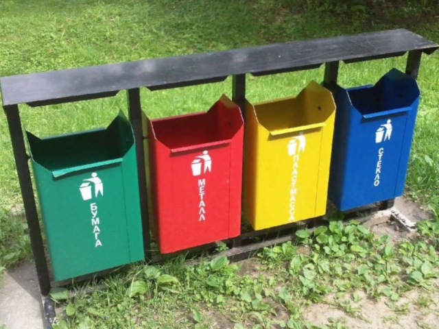
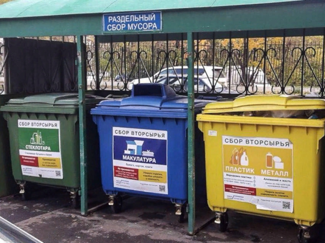

В современном мире необходимо разделять мусор и сдавать вторсырье, ведь
это поможет сохранить нормальную экологическую обстановку, приведет к
сокращению площадей свалок и решит проблему промышленных отходов. Нельзя
забывать, что это приведет к сокращению потребляемых ресурсов, а так же
поможет прививать экологическое сознание с ранних лет. А это, в свою
очередь, приведет к сохранению планеты для следующих поколений. Однако
существует мнение, что в России нет перерабатывающих предприятий, но это
не так. На данный момент таких в России насчитывается около двух с
половиной тысяч, и все они недозагружены.
|  |  |